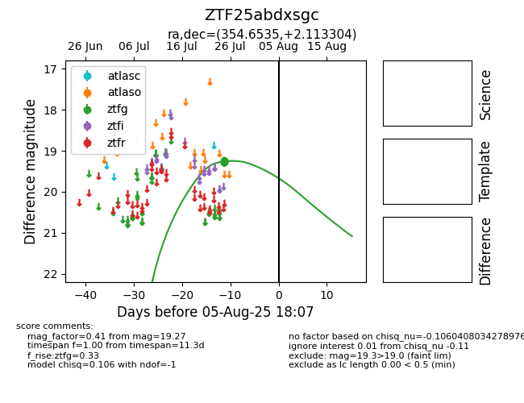

Target ZTF25abdxsgc at 2025-08-05 18:07, see:
FINK: fink-portal.org/ZTF25abdxsgc
Lasair: lasair-ztf.lsst.ac.uk/objects/ZTF25abdxsgc
ALeRCE: alerce.online/object/ZTF25abdxsgc
alt names
ZTF25abdxsgc (ztf,fink)
coordinates:
equatorial (ra, dec) = (354.6535,+2.11330)
galactic (l, b) = (89.0916,-55.89844)
photometry
last ztfg=19.27
4 ztfg detections
